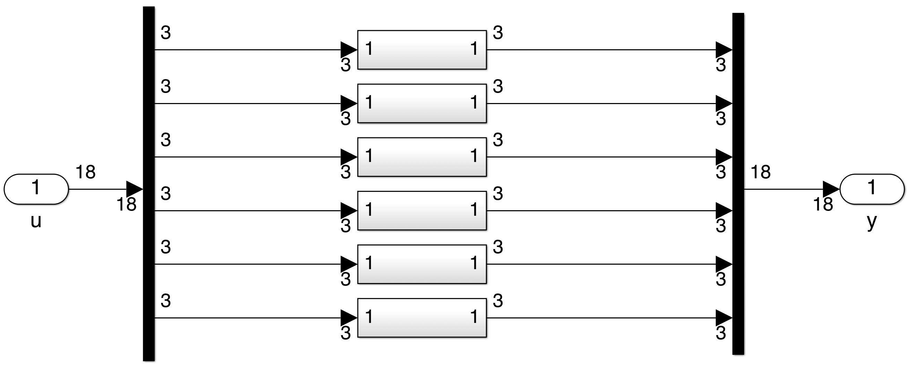

18x18 v-u_rotation
Linear parametrization of the (18x19) rotation matrix around any axis.
For the 6 d.o.f. body motion (3 translations and 3 rotations), this block implements the LFT parametrization of the $(18 \times 18)$ rotation matrix -or its transposed- for a given angle $\theta$ around a given axis $\mathbf{v}$. The associated DCM is thus repeated 6 times and can be applied to transform motion vectors
The parametrization is in tangent of the quarter-angle: $\sigma_4=\tan(\theta/4)$ to derive LFT when $\theta$ is a varying or an uncertain parameter (see: 3x3z-u_rotation)
It is a generalization of the block "18x18z-u_rotation".
See also: General notations, 18x18z-u_rotation, 18x18 DCM, 6x6v-nl_rotation, 3x3v-u_rotation, 3x3z-u_rotation
Contents
Description
Considering the 2 frames $\mathcal{R}_{1}$ and $\mathcal{R}_{2}$, the $\mathbf{DCM}=\mathbf{P}_{2/1}$ between $\mathcal{R}_{1}$ and $\mathcal{R}_2$ is defined as the $(3\times 3)$ matrix where each column is the component vector of each $\mathcal{R}_{2}$ orthogonal unit vector expressed in $\mathcal{R}_{1}$.
$$ \left[\mathbf{v}\right]_{\mathcal{R}_{1}} = \mathbf{DCM}\;\left[\mathbf{v}\right]_{\mathcal{R}_{2}} $$
In the 6 d.o.fs case (3 translations and 3 rotations), the rotation matrix is:
$$ \mathbf{rot} = \mbox{diag}\left(\mathbf{DCM},\mathbf{DCM},\mathbf{DCM},\mathbf{DCM},\mathbf{DCM},\mathbf{DCM}\right)$$
Thus, this block is the concatenation of 6 blocks 3x3v-u_rotation.
Ports
Input: a $(18 \times 1)$ motion vector $\delta\mathbf{m}$ in the frame $\mathcal{R}_{2}$ (resp. $\mathcal{R}_{1}$)
Output: the expression of $\delta\mathbf{m}$ in the frame $\mathcal{R}_{1}$ (resp. $\mathcal{R}_{2}$)
$\left[\delta\mathbf{m}\right]_{\mathcal{R}_{1}} = \mathbf{rot} \,\, \left[\delta\mathbf{m}\right]_{\mathcal{R}_{2}}$ (resp. $\left[\delta\mathbf{m}\right]_{\mathcal{R}_{2}} = \mathbf{rot}^T \, \, \left[\delta\mathbf{m}\right]_{\mathcal{R}_{1}}$)
Parameters
The two parameters are
- the coordinates of the (3x1) rotation axis vector $\mathbf{v}$ in $\mathcal{R}_{1}$ (or $\mathcal{R}_{2}$).
- the angle $\theta$ (unit: $rd$). It can also be an uncertain parameter declared with "ureal" with mode "Range".
Example: >> ureal('theta',0,'Range',[-pi pi])
Remarks: when "ureal" us used, "ulinearize" rather than "linmod" is recommanded. Then the uncertain model is parameterized according to the real parameter labelled "tan_theta_div4".
A checkbox is proposed to implement the transposed: $\mathbf{rot}^T$.
Simulink diagram under the mask
